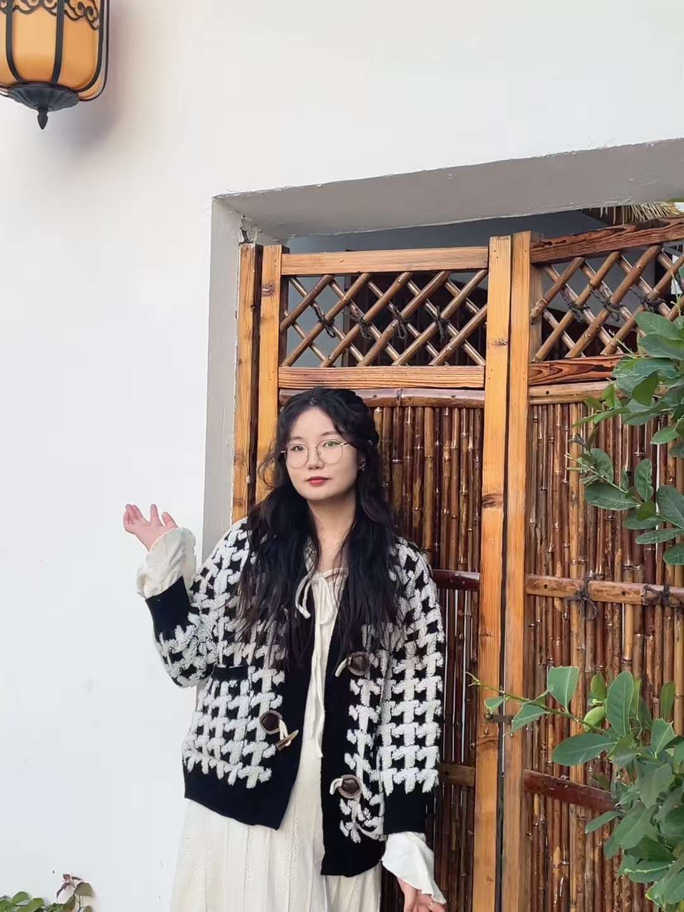
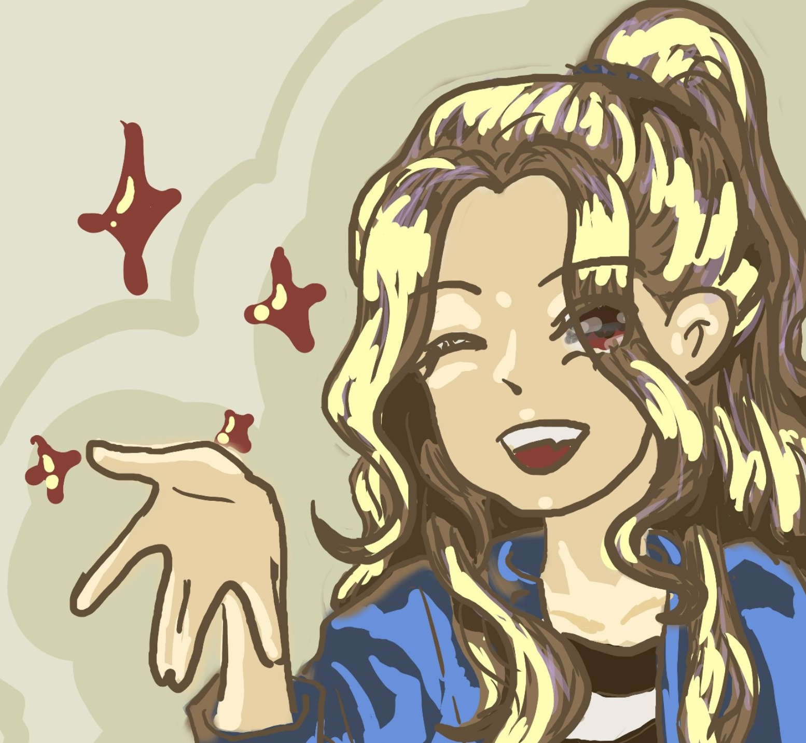
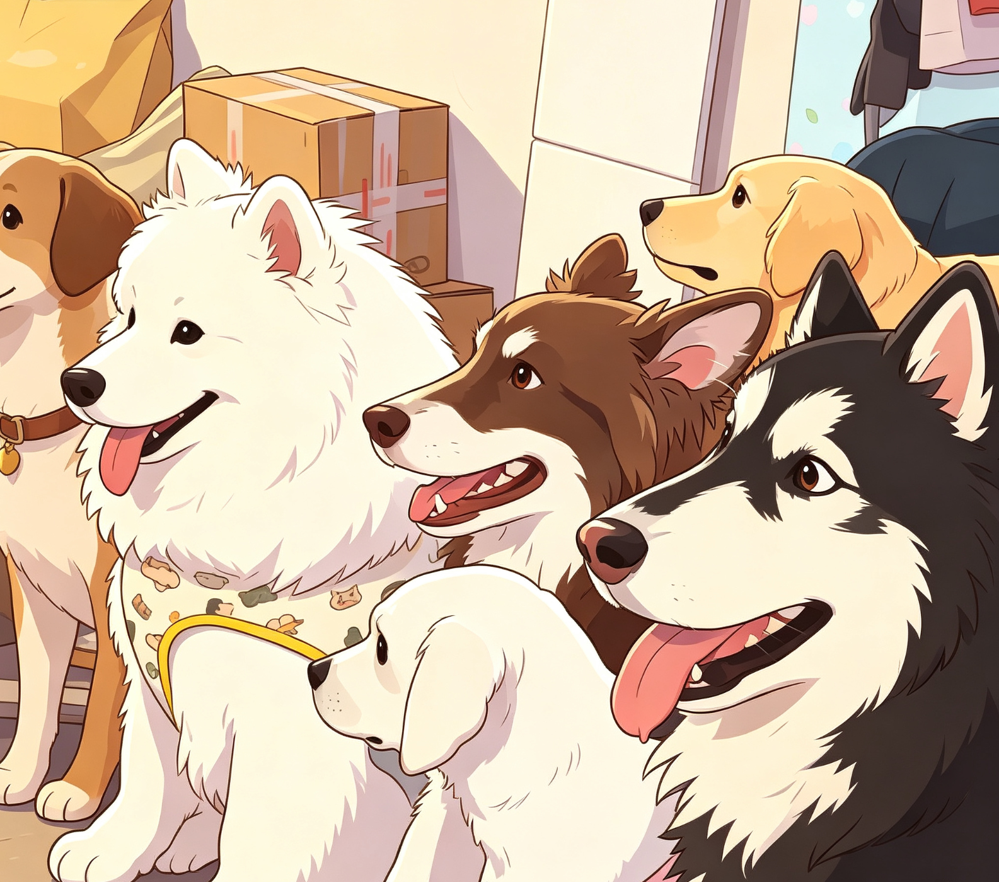

Hi~AI
规则与创造，让每一个想法得以发芽。
未选择音频
0:00 / 0:00

关于我
好奇心驱动 · 解决问题 · 创造价值
我想我的学习和职业生涯是无比幸运的，但如果要形容这2年的工作，大概就是在写一篇没有截止日期的"毕设"。每天都在收集需求、改内容、收反馈、再改一版——像极了当年被导师反复打回重写的日子。不同的是，这次没有终稿，只有一轮轮更接近的版本，而我也慢慢习惯了把事情一点点调顺的过程。
我能做什么
用三个方向，快速理解我的能力边界。
AI 软件
选择方向
业务方向
以下是负责过的AI业务板块及详细介绍
AI 客服业务
知识库 + 流程编排 + 人工兜底，让问题解决更稳定。
应用方向企业/游戏客服、工单/系统联动、风险触发转人工
挑战问题分布长尾 + 规则繁多 + 误答风险高
方案知识分层 + 意图路由 + 流程编排 + 兜底策略（转人工/澄清/拒答）
结果命中率/转人工率/满意度可量化跟踪，迭代更可控
AI 搜索业务
RAG 检索增强 + 引用溯源，让答案可信可复盘。
应用方向企业内搜、产品/规则查询、知识库检索与答案合成
挑战召回不稳、幻觉风险、线上效果难定位
方案召回/重排/答案合成分层 + 引用溯源 + 离线评测集与线上指标对齐
结果问题可解释、链路可定位、迭代有数据抓手
AI 运营业务
把玩法与内容变成可配置、可复制、可复盘的流程。
应用方向活动生成/配置、内容生产、策略编排与 SOP 沉淀
挑战玩法多、配置复杂、交付口径不一致
方案模板化结构 + 规范化字段 + 一键生成说明（生成/使用/上线）
结果支持批量部署与复盘迭代，协作成本更低
AI 陪伴硬件产品
端云协同 + 多模态反馈，做"克制但可持续"的陪伴。
应用方向语音陪伴、灯效/触觉反馈、端侧能力与 OTA 迭代
挑战时延/成本/隐私约束 + 体验稳定性要求高
方案端云分工 + 降级策略 + 人设/记忆边界 + 内容运营联动
结果交互闭环更稳定，可持续迭代路径更清晰
vibe coding 快速实现
从想法到可演示 Demo：快速搭结构、跑通交互与迭代。
应用方向原型/静态站、交互 Demo、组件化改造与体验调优
挑战需求变化快，效果要"马上可见"
方案最小闭环优先 + 可复用组件 + 逐步增强（性能/可用性/无障碍）
结果更快完成对齐与验证，减少无效沟通成本
AI 落地与质检标准
把质量门槛做成"指标 + 规则 + 流程"的可执行体系。
应用方向人设一致性/安全风险/知识准确性/格式规范等多维评测
挑战badcase 分散、复现难、迭代难量化
方案badcase 收集→归因→优化→回归→结论入档；离线评测+线上指标对齐
结果上线质量更稳，问题定位更快，迭代节奏更可控
工作经历
按时间线展示角色与关键结果。
深圳-互联网公司
2025.08 — 2026.03
AI 产品策划
从"能做"到"理解为什么这样做"
不再满足于功能实现，而是反复追问：这个能力，为什么要这样设计？
在不断调试、迭代与复盘中，我逐渐形成了一些自己的判断：
好的 AI 体验，本质是"控制感"与"自由度"的平衡
Prompt 不是技巧，而是一种对产品意图的精准表达
数据不是结果，而是下一轮决策的起点
这一阶段，我开始从"执行者"，慢慢转向"定义问题的人"。
不再满足于功能实现，而是反复追问：这个能力，为什么要这样设计？
在不断调试、迭代与复盘中，我逐渐形成了一些自己的判断：
好的 AI 体验，本质是"控制感"与"自由度"的平衡
Prompt 不是技巧，而是一种对产品意图的精准表达
数据不是结果，而是下一轮决策的起点
这一阶段，我开始从"执行者"，慢慢转向"定义问题的人"。
中山-互联网公司
2025.03 — 2025.08
AI 产品经理
在不确定中，学会推进确定性
参与从 0 到 1 的产品搭建过程。
很多时候，没有标准答案，甚至没有清晰问题。
我做的事情很简单：
拆、试、错、再来一轮。
这是我第一次意识到：
"做产品"其实是在做取舍。
参与从 0 到 1 的产品搭建过程。
很多时候，没有标准答案，甚至没有清晰问题。
我做的事情很简单：
拆、试、错、再来一轮。
这是我第一次意识到：
"做产品"其实是在做取舍。
深圳-互联网服务公司
2024.07 — 2024.10
实习
开始接触职场协作。
没有宏大的目标，更多是基础工作与重复执行。
但也正是在这些"看起来不重要"的事情里，我学到了：
沟通不清，比事情做错更致命
把一件事做好，需要明确的标准
这段经历不耀眼，但很重要。
它让我看见了"人才市场"。
没有宏大的目标，更多是基础工作与重复执行。
但也正是在这些"看起来不重要"的事情里，我学到了：
沟通不清，比事情做错更致命
把一件事做好，需要明确的标准
这段经历不耀眼，但很重要。
它让我看见了"人才市场"。
江门-国企
2024.03 — 2024.05
实习
一切的起点
第一次参与组织运作。
更多是观察、理解、适应。
但我记住了一件事：
任何混乱，本质都是缺乏结构。
或许人际关系本就复杂。
这个认知，后来反复被验证。
第一次参与组织运作。
更多是观察、理解、适应。
但我记住了一件事：
任何混乱，本质都是缺乏结构。
或许人际关系本就复杂。
这个认知，后来反复被验证。
技能
按类别分组，便于快速扫读。
AI / 大模型
Agent 编排 · Prompt · 评测/质检 · 工作流
产品
需求分析 · PRD · 联调验收 · 项目推进
数据
评测数据集 · 质检框架 · 效果分析
工具
WorkBuddy/CodeBuddy · Vibe Coding · Coze/Dify · 飞书/TAPD
生活分享
阅读、旅行与一些小想法。




想象力和创造力发现更多的Goodcase
愿自己勇敢且善良的一路走下去
联系邮箱YPH_1124@qq.com